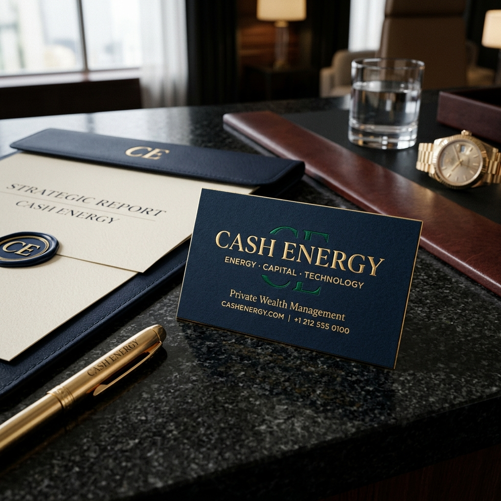

Edición Ejecutiva & Private Wealth
CASH ENERGY | El Efecto Fondo Azul Noche
Tienes toda la razón, Giovanni: al sustituir el fondo neutro por un Azul Noche Ejecutivo (Midnight Navy), el oro champán y el verde esmeralda cobran un relieve de auténtico lujo bancario e institucional.
1. Emblema en Fondo Azul Noche Profundo
Monograma Entrelazado en Oro Biselado & Verde Esmeralda
El contraste del azul oscuro otorga autoridad absoluta, haciendo que la marca parezca una firma de inversión de primer nivel como J.P. Morgan o Credit Suisse.
2. Aplicación en Despacho de Dirección & Tarjeta de Algodón
Papelería Corporativa en Mesa de Granito y Oro Estampado
Tarjeta de visita en azul noche con estampación en pan de oro, junto a la carpeta de informe estratégico. Este es el nivel que proyecta solvencia ilimitada.
